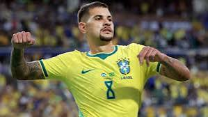
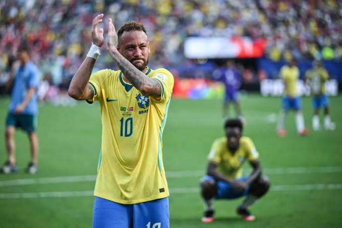

Ancelloti pecou em aspectos de marcação e técnica para ganhar, e Brasil toma 2 gols do Halland que foi decisivo de novo pela Noruega, ainda mantendo o tabu de 0 vitórias do Brasil contra a Noruega, a última derrota para a Noruega em copas foi na fase de grupos da copa de 1998 na França, Brasil 1 x 2 Noruega
/i.s3.glbimg.com/v1/AUTH_da025474c0c44edd99332dddb09cabe8/internal_photos/bs/2026/S/8/8zkAQBT8a6DO9WzZE1xA/115561252-east-rutherford-new-jersey-july-05-brazil-players-pose-for-a-team-photograph-before-the.jpg "Brasil 1 x 2 Noruega") Erros em Penâltis
Erros em Penâltis
Bruno Guimarões, Campeão da Copa da Inglaterra erra penâlti contra Noruega, será que era pro Vini bater?!
alt="foto do jogador Bruno Guimarões em campo"Raphina, um dos melhores jogadores do mundo, 5° Colocado na Bola de Ouro, não faz nada na copa, o único gol feito tava impedido contra o Haiti na fase de grupos
.jpg "Não fez boa atuação em copa")
Não corre, Não ajuda na marcação, Não tem Liderança no meio campo

Não dá mais MEDOMesmo sendo o único Penta Campeão do Mundo Brasil não tem mais a mesma qualidade que tinha em 2002 na Copa da Corêa e do Japão
.jpg "vergonhas")
Após dura eliminação contra a Noruega, o craque não confirmou sua aposentadoria da seleção

Brasil Confirma Amistosos contra seleção australiana e indianaSerá o último jogo de Neymar pela seleção, ancelloti pode testar novas peças para o ciclo até a copa de 2030
A ideia veio após o mundial de seleções, onde começou a partir da 20° rodada
/i.s3.glbimg.com/v1/AUTH_bc8228b6673f488aa253bbcb03c80ec5/internal_photos/bs/2025/A/g/ZrkUUTQlyQqyBXyWBYGA/imagem-do-whatsapp-de-2025-10-12-a-s-03.53.26-68743667.jpg "nova tecnologia") CBF e CONMEBOL não se pronunciaram com a proposta da FIFA para vender ações a investidores
CBF e CONMEBOL não se pronunciaram com a proposta da FIFA para vender ações a investidores
A UEFA e as federações europeias, disseram que não iriam participar das competições internacionais da FIFA, caso isso ocorra
A ideia também é incluir jogos na América do Sul, como Argentina Uruguai Chile Paraguai